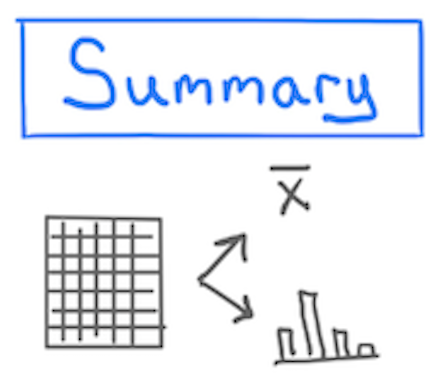
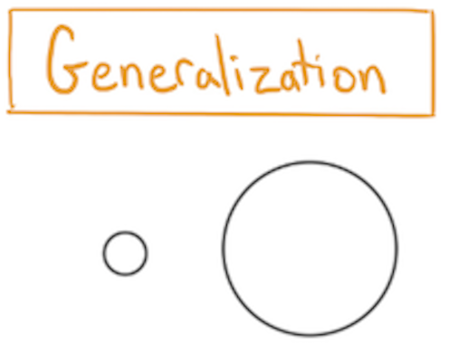
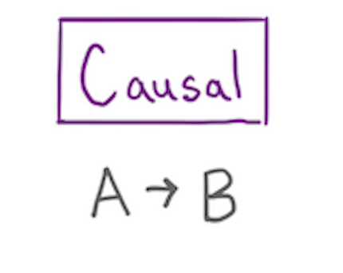
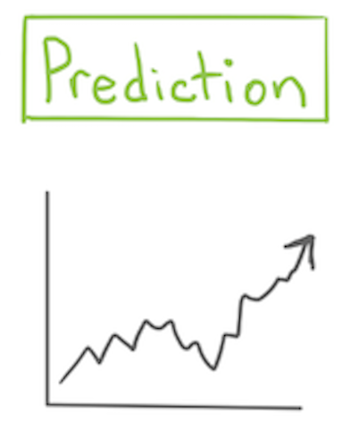
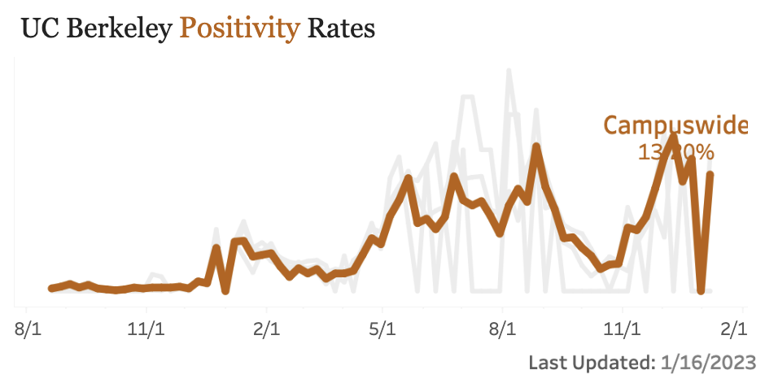
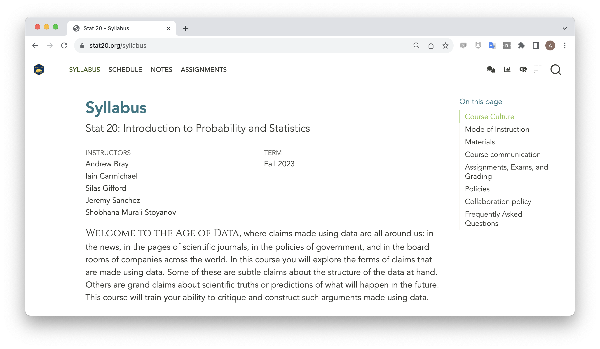
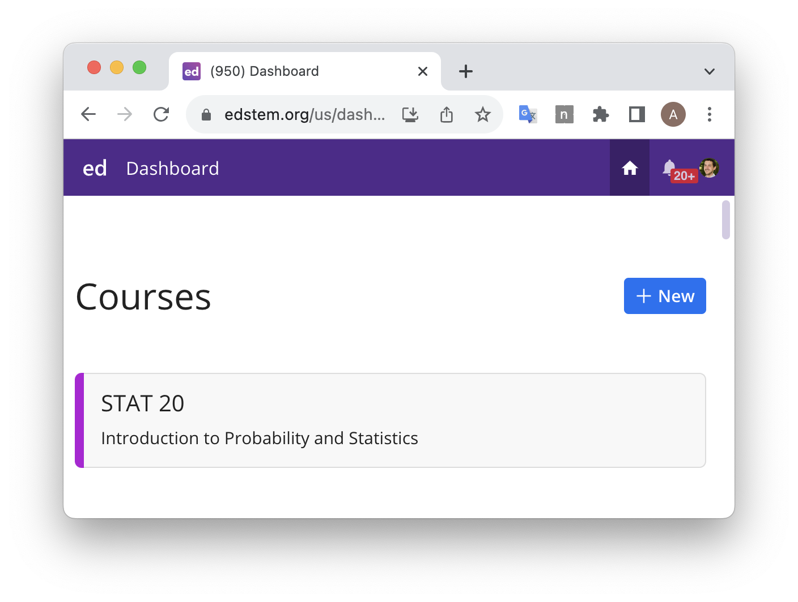

Understanding the World with Data
Agenda
- Introductions
- The Data Science Lifecycle
- Types of Claims with Practice
- Course Structure and Syllabus
- Intro to R and RStudio
- Looking forward
Introductions
- Let us first introduce ourselves!
Introductions
In groups of 3, take turns introducing yourselves to one another by providing the info listed on the handout (your name, hometown, etc).
Each person should finish with a handout filled-in with info on their groupmates. Make sure you save this for later this week!
05:00
The Data Science Lifecycle
What’s going on here?

- As a group, formulate at least three possible explanations for what’s going on in the picture.
03:00

Understand
the World
Data
Understand
the World
Data
Takeaways from this exercise
We can call the process of:
- having a question,
- finding data to investigate that question,
- reaching a conclusion,
- and then thinking of a next step which starts everything over again
- the data science lifecycle.
This lifecycle involves constructing and critiquing claims made using data: which is the main goal of our course!
Types of Claims
Course Goal
To learn to critique and construct
claims made using data.
To learn to critique and construct
claims made using data.
To learn to critique and construct
claims made using data.
To learn to critique and construct
claims made using data.
To learn to critique and construct
claims made using data.
To learn to critique and construct
claims made using data.
To learn to critique and construct
claims made using data.

A numerical, graphical, or verbal description of an aspect of data that is on hand.
Example
Using data from the Stat 20 class survey, the proportion of respondents to the survey who reported having no experience writing computer code is 70%.

A numerical, graphical, or verbal description of a broader set of units than those on which data was been recorded.
Example
Using data from the Stat 20 class survey, the proportion of Berkeley students who have no experience writing computer code is 70%.

A claim that changing the value of one variable will influence the value of another variable.
Example
Data from a randomized controlled experiment shows that taking a new antibiotic eliminates more than 99% of bacterial infections.

A guess about the value of an unknown variable, based on other known variables.
Example
Based on reading the news and the price of Uber’s stock today, I predict that Uber’s stock price will go up 1.2% tomorrow.
Practice Concept Questions
Practice Concept Questions
We will now re-examine a few pathways in the data science lifecycle:
- Forming a question -> collecting data
- Collecting data -> making a claim
From Questions to Data
Is the incidence of COVID on campus going up or down?
Discuss:
A. What type of data can help answer this question? Consider
- Which different people / institutions collect relevant data
- Is certain data not available? Why not?
B. Will this question be answered by a summary, a prediction, a generalization, or a causal claim?
06:00
From Data to Claims
One source of data:
“The following dashboard provides information on COVID-19 testing performed at University Health Services or through the PCR Home Test Vending Machines on campus. It does not capture self-reported positive tests. It provides a look at new cases and trends, at a glance.”

Formulate one claim that is supported by this data1.
03:00
Break
05:00
Course Structure
- Read lecture notes
- Work through reading questions
- Work through concept questions solo / in groups / as a class
- Make progress on assignments
All of the materials and links for the course can be found at:
Syllabus
Take a few minutes to read through the syllabus and jot down at least one question that you have.
04:00
Ed Discussion Forum

- Forum to ask questions, answer questions, and course announcements
- Please answer each other’s questions!
Practice by asking/answering a question on the “Syllabus Discussion” thread on Ed via the link on the course website.
Intro to R and RStudio
Load the Lab 1 Template into RStudio
Click the link below…
Lab 1
15:00
General Lab Workflow
- Lab Questions will be posted to the course website.
- You’ll author your Lab Reports as Quarto Documents that blend text and code. They should contain only answers.
- Render your .qmd file to a .pdf file then download that file from RStudio to your computer.
- Go to Gradescope and upload your .pdf lab report, being sure to assign questions to the pages.
Looking forward
- Read the lecture notes for Taxonomy of Data (released Friday evening).
- If you have any questions, please leave a comment/question on the Taxonomy of Data thread on Ed.
- Answer the Reading Questions for Taxonomy of Data on Gradescope by 11:59 pm Mon/Tues (the night before your class).
- Lab 1 due Tuesday at 10 am on Gradescope.
- Worksheet Packet 1 (just 2 google surveys) due Tuesday at 10 am on Gradescope.